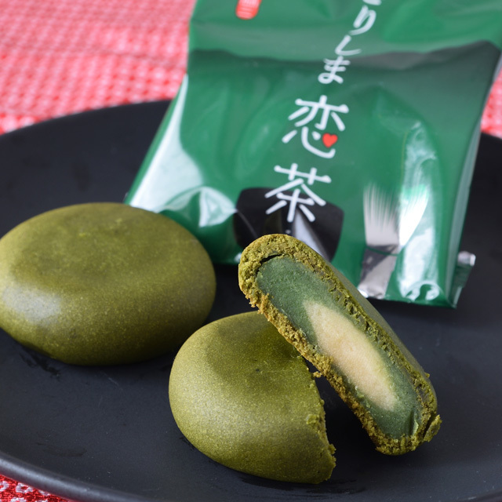

南池袋の精肉屋 「鈴源肉店」
南池袋にある精肉屋 「鈴源肉店」。
昔からある街のお肉屋さん。お弁当も販売しています。私はいつもコロッケ（110円）を注文します。
オーダーを受けてから揚げてくれるので、いつも熱々ホカホカ♪ 前もって予約注文しておくと、待ち時間を短縮できるので良いですよ。
ソースをかけるかどうかも確認してくれます。
お弁当はまだ試したことないですが、少食の人は「ご飯少なめ」とオーダーしないと、とてもじゃないけど食べきれないほどボリューミーなお弁当だそうです。
（ご飯を少なくと言えば10円位は値引きしてくれるらしいです。）
もちろん、普通のお肉屋さんなので、生肉を購入することもできます。
店員さんも元気で優しいおじいちゃんです。
@hino

鹿児島 菓子処森三(もりぞう)
霧島菓子処森三は、新鮮な地元の素材を活かし、伝統的な和菓子から洋風のスイーツまでバラエティ豊かな品揃えが自慢です。
手作りの温かさと職人の技が息づくお菓子たちは、季節ごとに変わる風情を楽しませてくれます。店内は落ち着いた雰囲気で、贈り物やご自身へのご褒美にぴったり。
特に地域の名産を使用した看板商品は、地元の人々からも愛されています。お茶うけや贈り物に選ぶのはもちろん、ほっと一息つきたい時の癒しの場としてもおすすめです。
霧島の美しい自然環境に育まれたお菓子たちが、訪れる人々に心地よいひとときを提供します。
菓子処森三オンラインショップ
@KantaEdamoto
